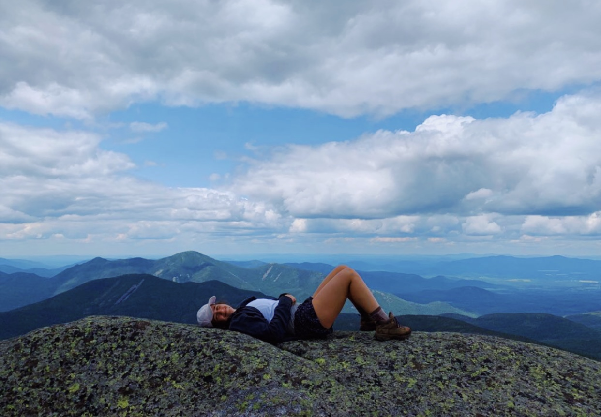
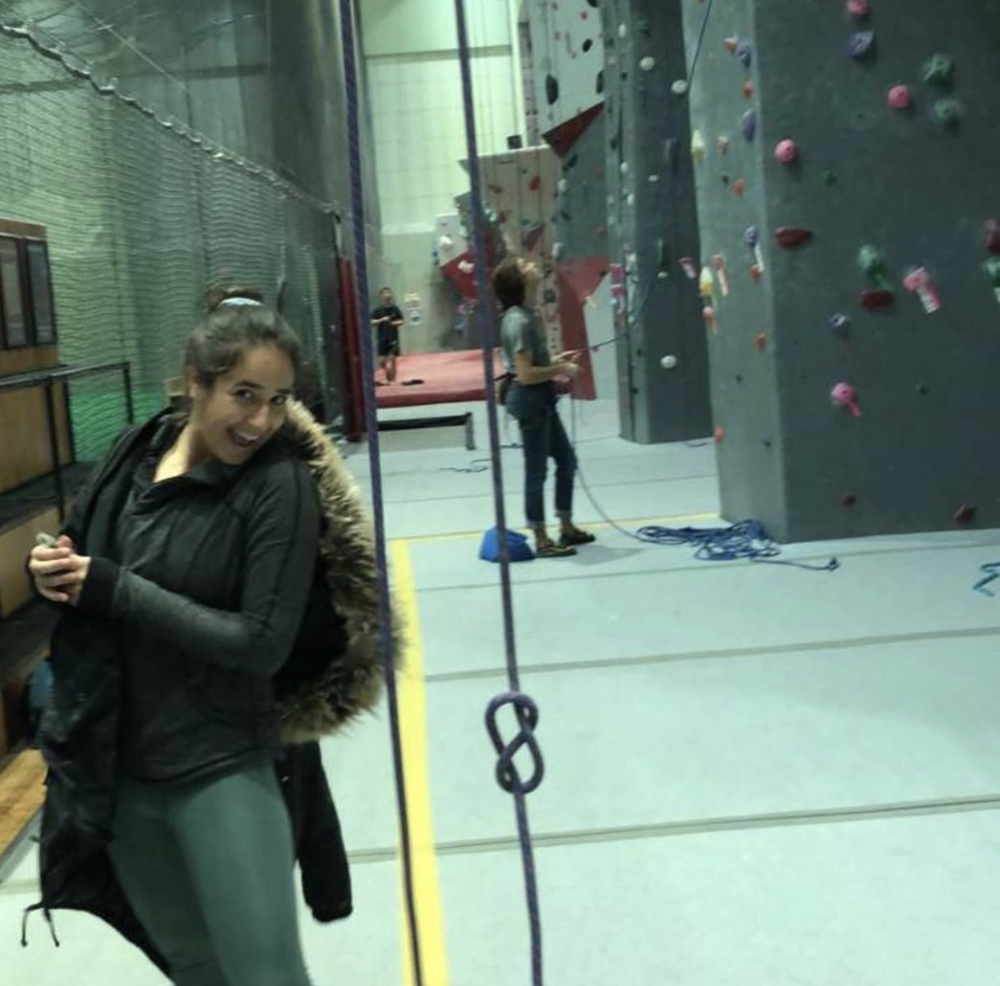
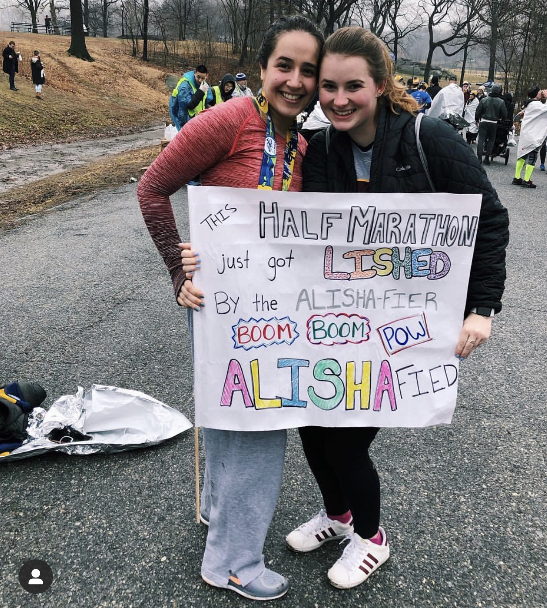
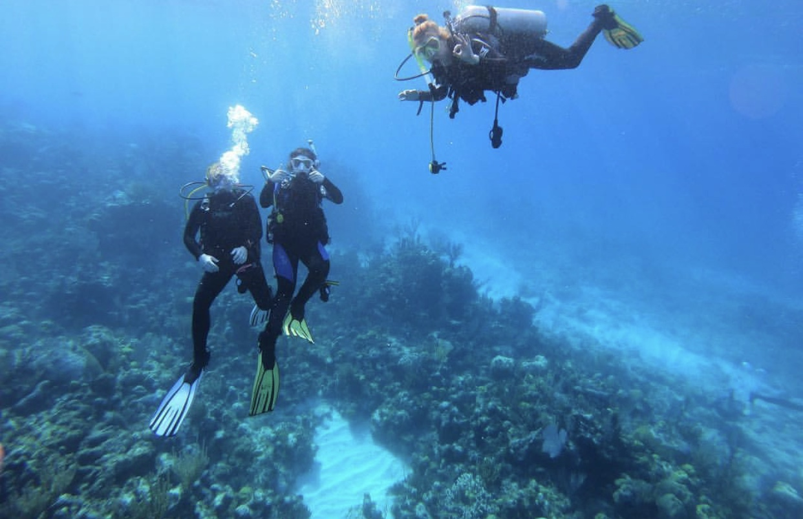

Hobbies
Hiking
I love the outdoors and hiking! Last summer, I lived in the Adirondack Mountains in NY, and got to go camping, backpacking, and mountain climbing. This picture was taken at the peak of Mount Marcy, the tallest peak in the state of New York!
Rock Climbing
Although I used to be afraid of heights, rock climbing is now one of my favorite hobbies. Cornell has a rock wall on campus that I belong to, and love to top rope and boulder there!
Running
I have a love-hate relationship with running. Although sometimes my laziness gets the best of me, I love to run outdoors, especially when it is raining. This photo was taken at the Central Park Half Marathon in New York. I hope to run a full marathon one day!
Frisbee

I am on the club frisbee team at Cornell! I love playing and tossing around the disk, but I mostly love the people I play with! Here is an action shot of me at a tournament in Buffalo, NY.
Scuba Diving
This is a rather new hobby of mine, but I recently got PADI scuba dive certified! I love the water, sea animals, and everything about scuba diving, and I can't wait to travel more and dive in new places.